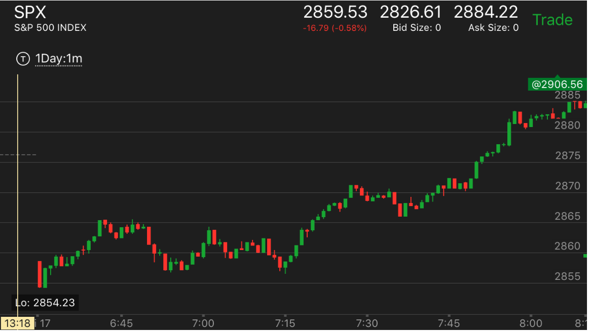
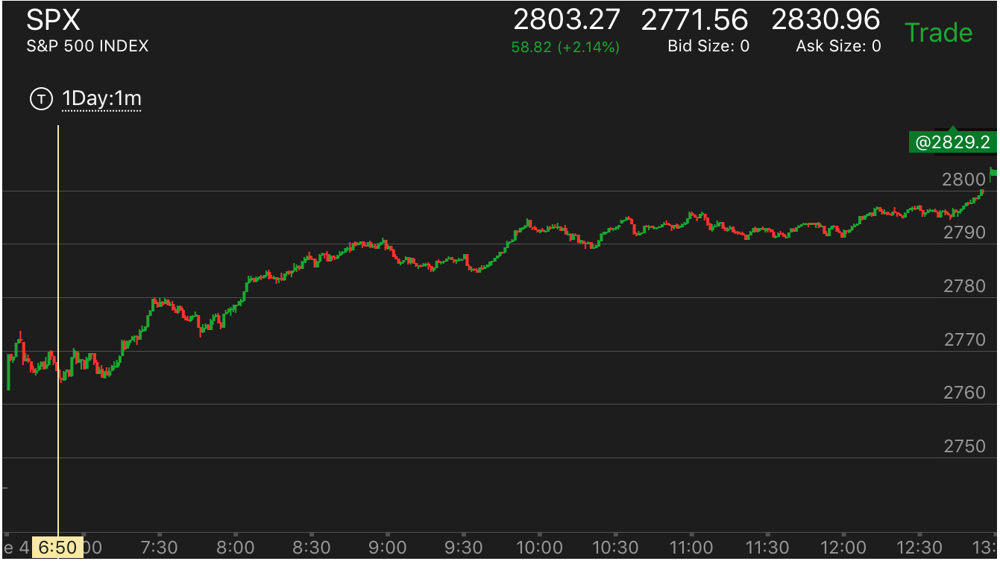
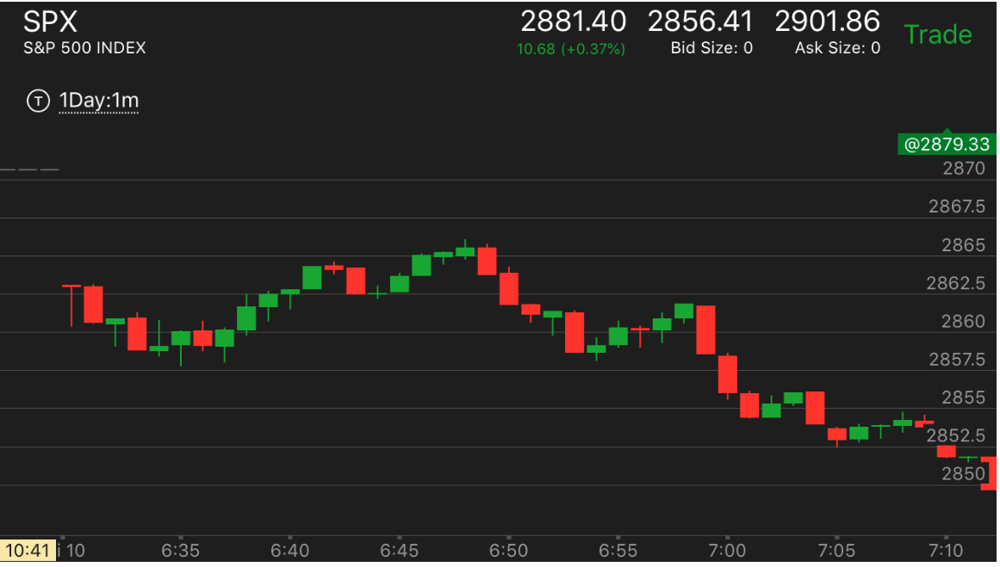

开盘震荡后，建立趋势再追赶操作。
- 开盘后，如果处于震荡状态，除非很明显的两段走势，可以等待一下，等它建立趋势后，回调或者缓慢运动的时候，
追赶操作。这时需要克服自己的心理障碍。
开盘建立升势
开盘建立跌势
开盘建立升势
TOP

图示：
1. 开盘后下跌一分钟，冲高，这个冲高是分为两段的，
似乎是一个两段走势。它6：40下跌。很快下来。又不像一个两段走势。似乎是一个回调。
后面一直震荡。这个本身说明它可能不是两段走势，从时间上看，它是一个结合走势。
那么开盘的冲高就是第一浪了。
2. 但是也可以不用这么担心，而是等待。它7：15冲高，创新高。这样表示确实是个升势。
然后回调的时候，出现了两段下跌，表示会继续上涨。这时可以放心做多。当然这种方法，
要求判断清楚，7：15这个走势不是两段走势的第二段。它不是因为前面回调太多了。
第一浪几乎全部回调，而且时间很长，说明前面的第一浪是建立升势，
而不是真的第一浪。然后开始上涨后，这个不是第二浪。

图示：开盘上涨形成两段走势，立刻下跌，说明仍然处于升势。
长时间震荡后，再次冲高，形成了升势。它每次拉回都有加速下跌。不断的升高。

图示：前几天大跌，当天低开10个点，开盘后，走平几分钟后，冲高，拉回所有涨幅，继续快速冲高。
形成上涨的主要走势。
开盘建立跌势
TOP

图示：出现了两段上涨走势.这个属于弱两段上涨。
它立刻就出现了下跌的第一浪走势。6：49第一浪下跌，5分钟跌了7个点。6：58第二浪下跌
它3分钟就跌了7个点。但是后面立刻反弹，这样5分钟来看，它跌了只有6个点。不能算两段走势。